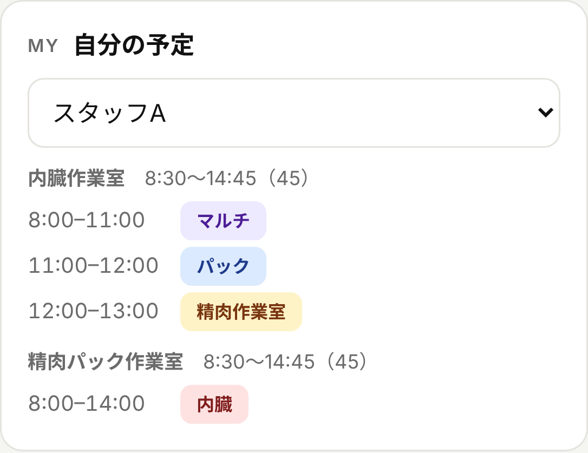
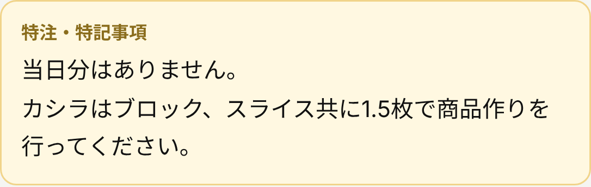
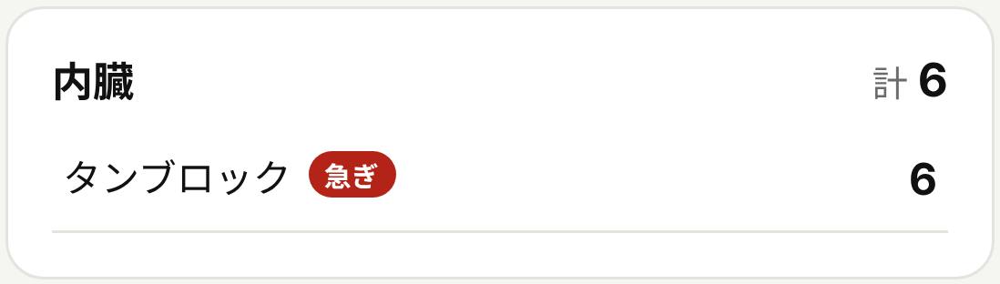

MEAT LINK

スマホのカメラで
QRコードを読み取ってください
ログイン不要無料
明日の作業予定・現場改善・シフト変更・希望休が、このアプリひとつで見られます。
https://s-meat.github.io/meat-portal/
01できること（画面の上のボタンで切り替え）
明日の予定だれが・何時に・何をするか。何を何パック作るか。
現場改善改善のアイデアや困りごとを送る。
シフト変更シフト変更・当日欠勤の申請。
希望休希望休・時間指定・有給の申請。
02ホーム画面に追加しておくと便利です
iPhone（Safari）
- 画面下の「共有」（□に↑）を押す
- 「ホーム画面に追加」を押す
- 右上の「追加」を押す
Android（Chrome）
- 右上の「︙」を押す
- 「ホーム画面に追加」を押す
- 「追加」を押す
03「明日の予定」の見かた 大事な3つ
1自分の名前を選ぶ
「自分の予定」で名前を選ぶと、何時から何の作業かが出ます。次からは自動で選ばれます。

2黄色い枠は必ず読む
社員からの連絡（特記事項）です。作業の前に必ず読んでください。

3「当日分」「急ぎ」を確認
当日分あり 急ぎ が出たら、「当日分」を押して先に作る商品を確認。

希望休申請のURLが変わりました。前のアプリを開くと案内が出ます。「新しいアプリを開く」を押して、ホーム画面に追加し直してください（このアプリの「希望休」タブからも申請できます）。
くわしい使い方はこちら
画面の写真つきで、ひとつずつ説明しています。
わからないことや追加の要望は、塚越に声をかけてください。
画面の写真つきで、ひとつずつ説明しています。
わからないことや追加の要望は、塚越に声をかけてください。